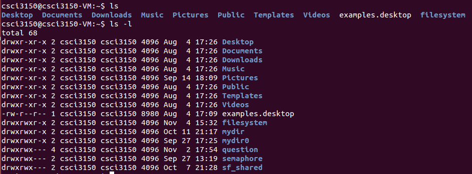

Directory
| Function | Description | Returns |
| mkdir(const char * pathname, mode) | Create a dirctory | 0 if OK, -1 on error |
| rmdir(const char * pathname) | Delete a directory | 0 if OK, -1 on error |
| opendir(const char * pathname) | Open a directory | Pointer of DIR if OK, NULL on error |
| readdir(DIR * dp) | Read a directory | Pointer of dirent if OK, NULL at the end of directory or error |
| closedir(DIR * dp) | Close a directory | 0 if OK, -1 on error |
Note that DIR structure is an internal structure used by readdir, closedir to maintain information about the directory being read.
The dirent structure contains the inode number and the name. This information is collected into a file called dirent.h.
typedef struct { /* portable directory entry; system-dependent*/
ino_t d_ino; /* inode number*/
char d_name[NAME_MAX+1]; /* name + '\0' terminator*/
} dirent;
typedef struct { /* minimal DIR: no buffering*/
int fd; /* file descriptor for the directory*/
Dirent d; /* the directory entry*/
} DIR;
We use an example to show how to use these functions. listFile.c simulates command ls to list all the file in the current directory.
/*listFile.c*/
#include<stdio.h>
#include<stdlib.h>
#include <sys/types.h>
#include <dirent.h>
int main(void){
char * curr_dir = NULL;
DIR * dp = NULL;
struct dirent * dptr = NULL;
int count = 0;
curr_dir = getenv("PWD");
if(curr_dir == NULL){
perror("getenv");
exit(EXIT_FAILURE);
}
if(dp == opendir((const char*)curr_dir)){
perror("opendir");
exit(EXIT_FAILURE);
}
for(count = 0; (dptr = readdir(dp)) != NULL ; count++){
printf("%s ",dptr->d_name);
}
printf("\nTotal files %u \n", count);
return 0;
}
